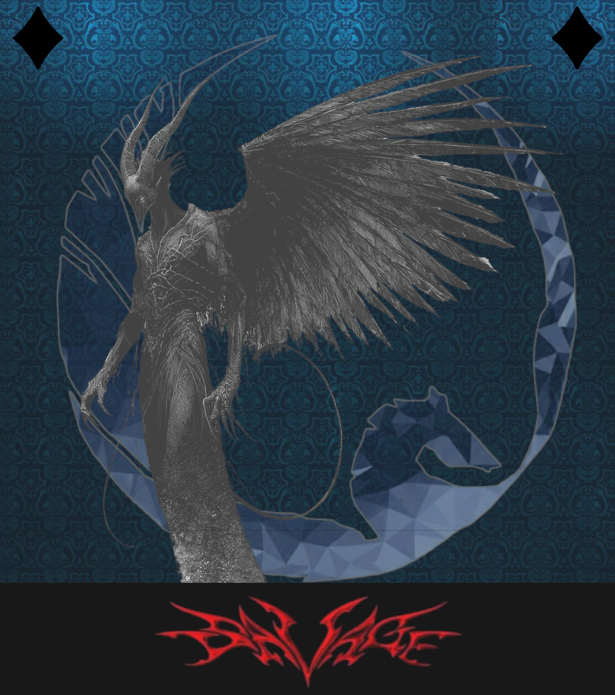
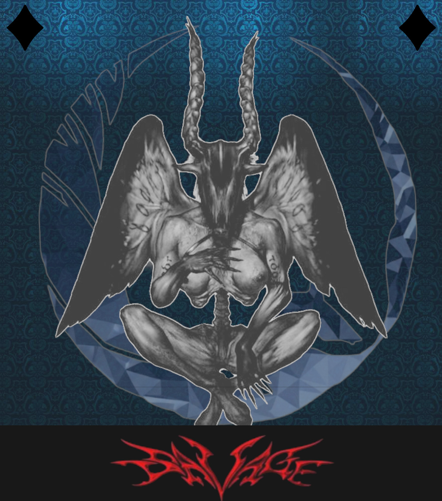
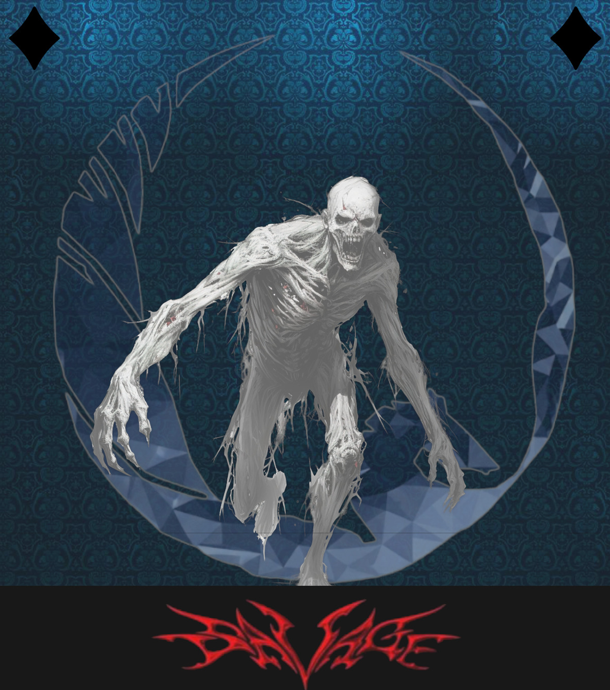
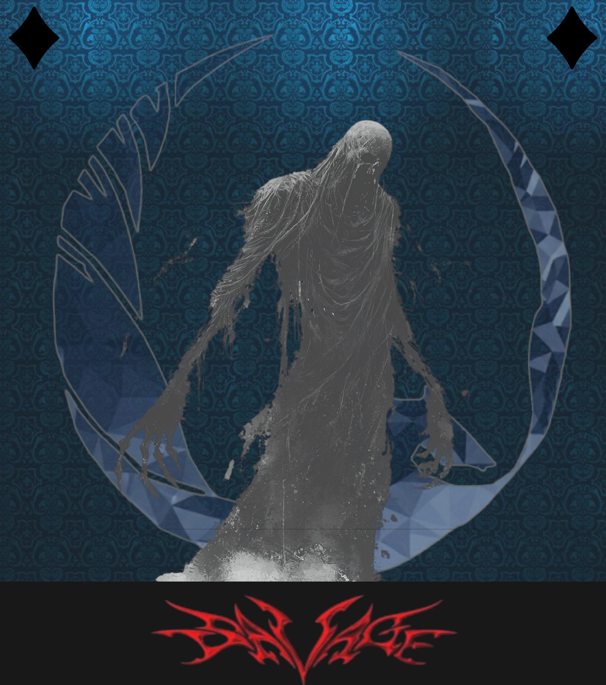

PROLOGUE
Every collapse in recorded history shares an author no textbook names.
Not a nation. Not a leader. Four things older than either — filed, cross-referenced, and never quite closed.
Somewhere in this building, across three days and seven rooms, that file is being reopened.
Four names. Four files. Begin with the first ↓

FILE NO. 01 — OIL & TERROR
Egotism
The Crowned Witness
Before thrones, before flags, there was the first council — and the voice in it that mistook its own reflection for consensus. Egotism does not conquer. It is invited. It wears the shape of whoever is already speaking, and calls their certainty leadership.
PHILOSOPHY — Leadership is just certainty no one questioned in time.
"You were always meant to lead this."
THE TELL — A ceasefire that only benefits the side that named it.
FILE NO. 02 — OPERATION VAJRA
Escalation
The Uncounted Step
Escalation has never taken a single step it could be blamed for. It only ever asks for one more — a patrol extended, a deadline moved, a warning shot logged as a mistake. History remembers the width of the line finally crossed. Escalation only remembers that it looked smaller than the one before.
PHILOSOPHY — There is no last step. Only the next one, made to look small.
"Just once more. Just to be safe."
THE TELL — A "measured response" with no written ceiling anywhere.


FILE NO. 03 — UNHRC
Ignorance
The Unseeing
Ignorance does not blind anyone. It waits — patient as erosion — for a headline to lose its color, for a number to grow too large to picture, for "again" to start sounding like weather instead of warning. It has buried more evidence than any war. It has never fired a single shot.
PHILOSOPHY — Attention is the only defense it has ever had to defeat.
"It's not your headline. Not your problem."
THE TELL — A story that used to be page one, now buried on page eleven.
FILE NO. 04 — PRESS CORPS
Silence
The One Who Stayed
Everyone else leaves the room eventually — the witnesses, the cameras, the inquiry. Silence does not. It was never loud enough to be accused of anything, and that is precisely how it has survived every version of this file. It signs nothing. It simply agrees to remember less than it saw.
PHILOSOPHY — The safest position in any crisis is the one that leaves no minutes.
"Say nothing. Let it pass."
THE TELL — An investigation that opened and simply never closed.

CASE HISTORY
Three Editions. One File.
The first flagship edition. The pattern is noticed for the first time.
The second flagship. More rooms, more evidence, more of the Board drawn in.
Three days. Seven committees. The case that was never finished gets one.
Four files. One pattern, wearing four faces. The council never needed a villain — it has always had one for every seat at the table. What it has never had is a closing argument.
For three days, seven committees will try to write one. The verdict is not decided yet. That is not a metaphor for this event. For three days, it is the event.
SBGMUN 2026
The Closing Argument
Seven committees. Four files. Three days to argue humanity's case.